SKALA | E-Commerce 매출 분석 및 정리
SKALA FULL-STACK ENGINEERING · 종합실습 4
E-Commerce 매출 분석 및 정리
랜덤 데이터 위에서 요청을 분석 조건으로 바꾸고, 검증 가능한 결과로 전달하기
판교 4반 · 최승우
PostgreSQL 17.10 · ecom schema
2026-08-14
보고서 관점 이번 실습은 가장 빠른 SQL을 고르는 시험이 아니라, 구매·재무·CRM의 요청을 같은 기준으로 재현하고 설명하는 연습이다. |
Executive Summary
분석의 핵심은 ‘누가 요청했는가’보다 ‘무엇을 한 건으로 볼 것인가’를 먼저 정하는 것이었다. 주문과 주문상품의 1:N 관계를 그대로 집계하면 주문 수와 평균 주문 금액이 왜곡되므로, Q2·Q5·Q9는 주문 단위 선집계를 기준으로 재작성했다. 상관 서브쿼리가 반복되던 Q6·Q7·Q10은 윈도 함수·JOIN·조건부 집계로 단순화했다.
분석 DB | skala_ecom_practice4 / user=chltmddn5843 |
데이터 규모 | 고객 3,000 · 상품 600 · 주문 9,890 · 주문상품 26,716 |
유효 매출 상태 | paid · shipped · delivered |
공통 매출식 | order_items.line_total = unit_price × qty - discount |
측정 방식 | 비교표는 EXPLAIN 3회 중앙값 · 원문 로그 화면은 실행 당시 1회 실제 출력 |
권한 주의 본 실습은 로컬 관리자 계정으로 수행했다. 운영 환경에서는 분석용 읽기 전용 계정과 Materialized View 유지보수 계정을 분리하고 최소 권한만 부여해야 한다. |
요청 대응 원칙
Q1. 최근 한 달 실제 총매출
요청 부서 | 재무 |
요청 목적 | 최근 한 달 실제 매출 규모 확인 |
판정 기준 | 롤링 1개월·유효 주문 상태 |
튜닝 전
직접 조인 집계
SELECT |
튜닝 전 실행 결과
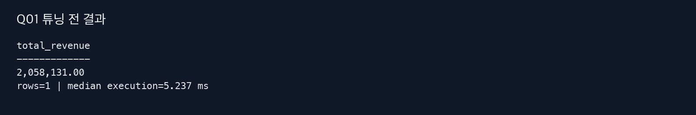
튜닝 전 성능 원문 로그 · Q01_plan_before.png
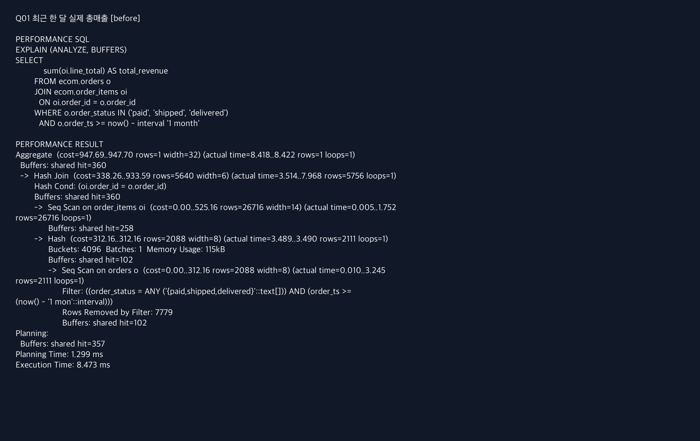
튜닝 포인트
변경 기간·상태 대상 주문을 먼저 명명해 조건과 집계 경로를 분리 |
튜닝 후
WITH recent_orders AS ( |
튜닝 후 실행 결과
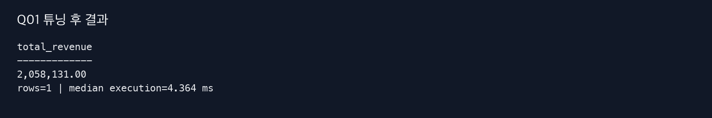
튜닝 후 성능 원문 로그 · Q01_plan_after.png
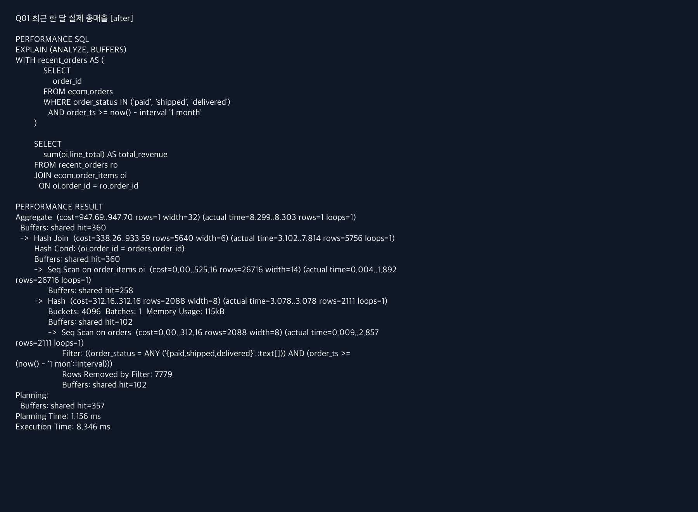
튜닝 전후 실행계획 비교
측정 항목 | 튜닝 전 | 튜닝 후 |
Execution Time | 5.237 ms | 4.364 ms |
Planning Time | 0.094 ms | 0.056 ms |
Actual Rows | 1 | 1 |
Shared Hit | 360 | 360 |
Shared Read | 0 | 0 |
Top Plan Node | Aggregate | Aggregate |
결과 동일 | - | YES |
업무 판단 및 요청 부서 전달안
튜닝 판단 재무 전달안 |
Q2. 월별 주문 수·매출·AOV
요청 부서 | 재무·경영 |
요청 목적 | 월별 주문 수·매출·AOV 추이 |
판정 기준 | 달력 월·주문 단위 평균 |
튜닝 전
주문상품 행에서 COUNT DISTINCT와 합계를 동시에 수행
SELECT |
튜닝 전 실행 결과
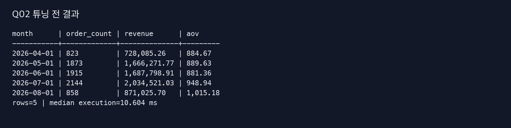
튜닝 전 성능 원문 로그 · Q02_plan_before.png
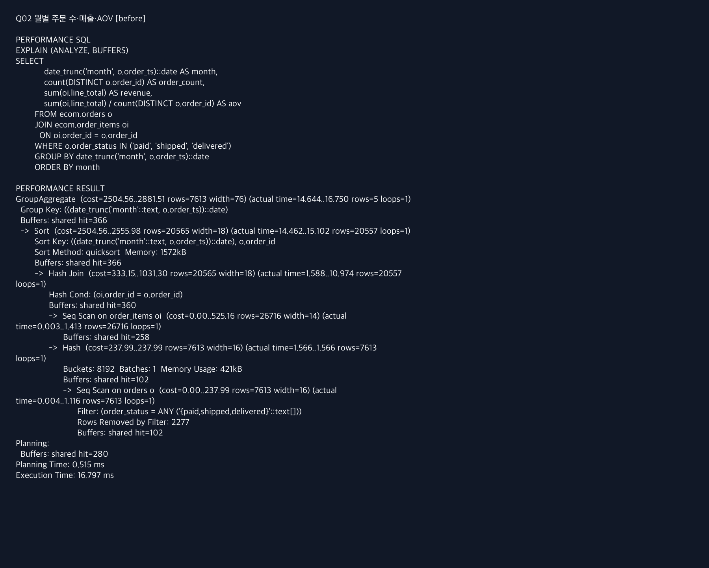
튜닝 포인트
변경 주문별 금액 선집계 후 월 집계 |
튜닝 후
WITH order_totals AS ( |
튜닝 후 실행 결과
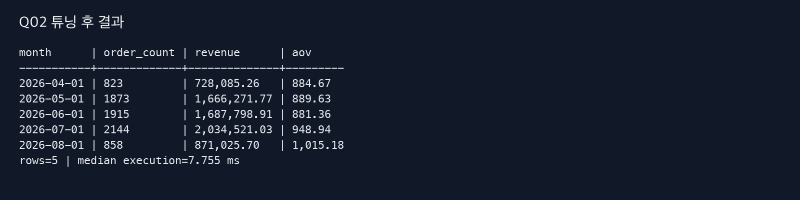
튜닝 후 성능 원문 로그 · Q02_plan_after.png (1/2)
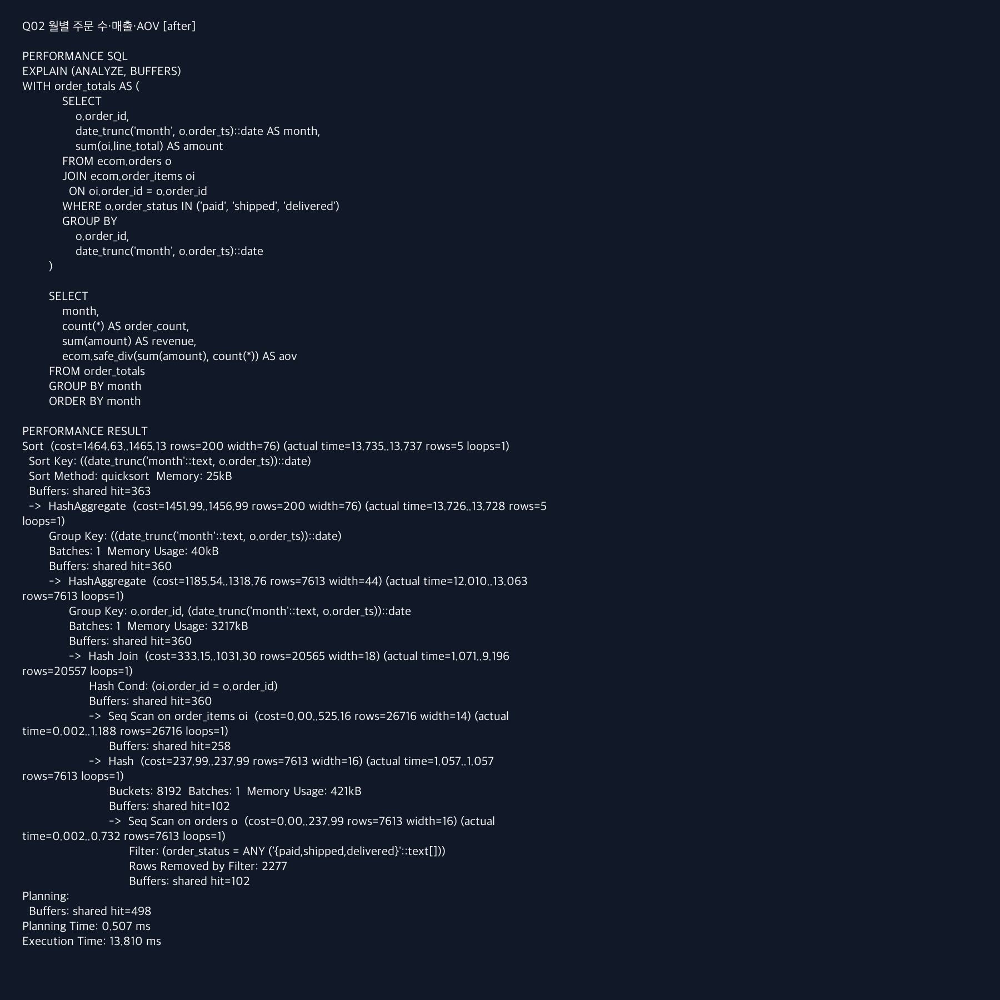
튜닝 후 성능 원문 로그 · Q02_plan_after.png (2/2)
튜닝 전후 실행계획 비교
측정 항목 | 튜닝 전 | 튜닝 후 |
Execution Time | 10.604 ms | 7.755 ms |
Planning Time | 0.059 ms | 0.055 ms |
Actual Rows | 5 | 5 |
Shared Hit | 360 | 360 |
Shared Read | 0 | 0 |
Top Plan Node | Aggregate | Sort |
결과 동일 | - | YES |
업무 판단 및 요청 부서 전달안
튜닝 판단 재무·경영 전달안 |
Q3. 최근 90일 카테고리 매출 Top 10
요청 부서 | 구매·MD |
요청 목적 | 최근 90일 카테고리 성과 비교 |
판정 기준 | 카테고리 매출 Top 10 |
튜닝 전
전체 조인 후 기간 필터와 집계
SELECT |
튜닝 전 실행 결과
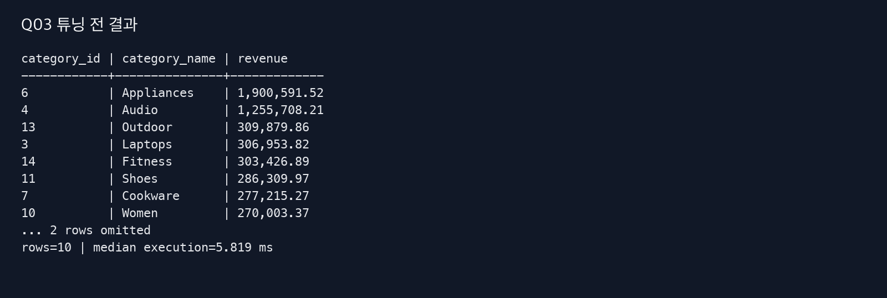
튜닝 전 성능 원문 로그 · Q03_plan_before.png (1/2)
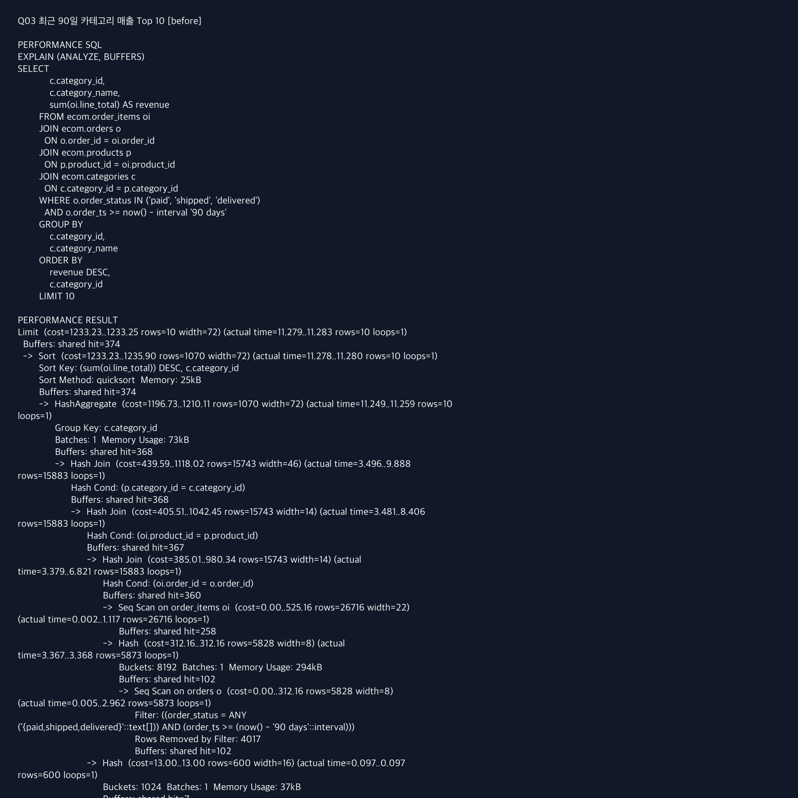
튜닝 전 성능 원문 로그 · Q03_plan_before.png (2/2)
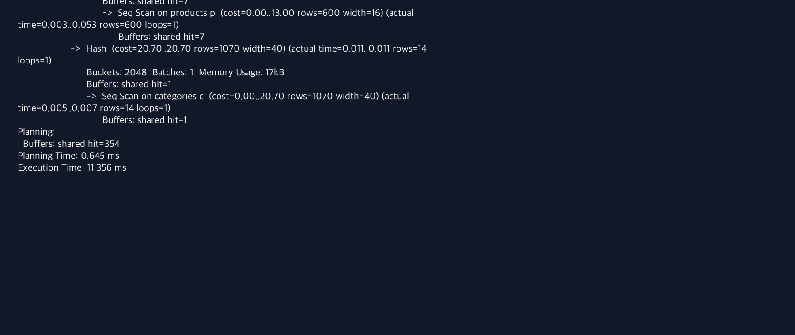
튜닝 포인트
변경 최근 판매행을 먼저 좁힌 뒤 상품·카테고리 연결 |
튜닝 후
WITH recent_sales AS ( |
튜닝 후 실행 결과
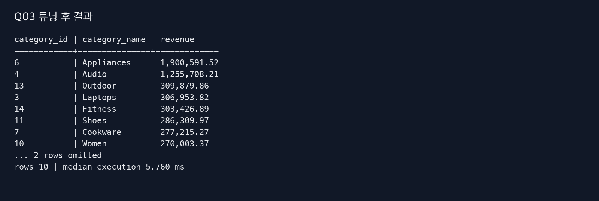
튜닝 후 성능 원문 로그 · Q03_plan_after.png (1/2)
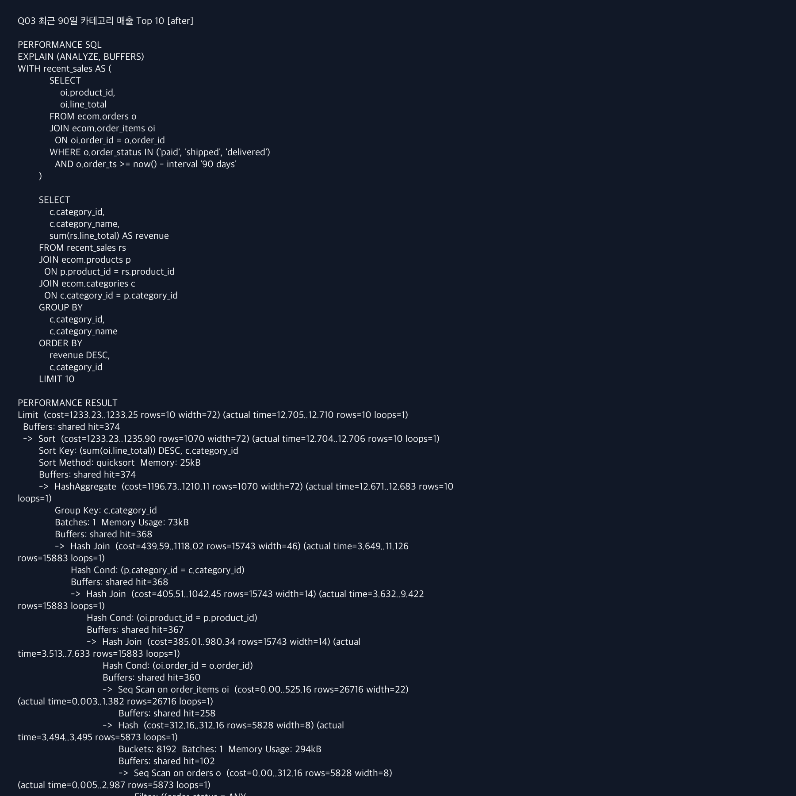
튜닝 후 성능 원문 로그 · Q03_plan_after.png (2/2)
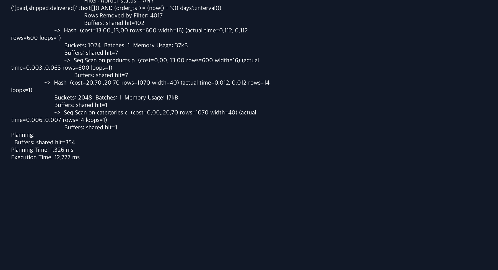
튜닝 전후 실행계획 비교
측정 항목 | 튜닝 전 | 튜닝 후 |
Execution Time | 5.819 ms | 5.760 ms |
Planning Time | 0.116 ms | 0.153 ms |
Actual Rows | 10 | 10 |
Shared Hit | 368 | 368 |
Shared Read | 0 | 0 |
Top Plan Node | Limit | Limit |
결과 동일 | - | YES |
업무 판단 및 요청 부서 전달안
튜닝 판단 구매·MD 전달안 |
Q4. 상품별 누적매출 RANK Top 20
요청 부서 | MD |
요청 목적 | 누적매출 상위 상품 선별 |
판정 기준 | RANK 기준 정확히 20개 |
튜닝 전
상품명까지 포함해 집계와 순위를 한 단계에서 처리
SELECT |
튜닝 전 실행 결과
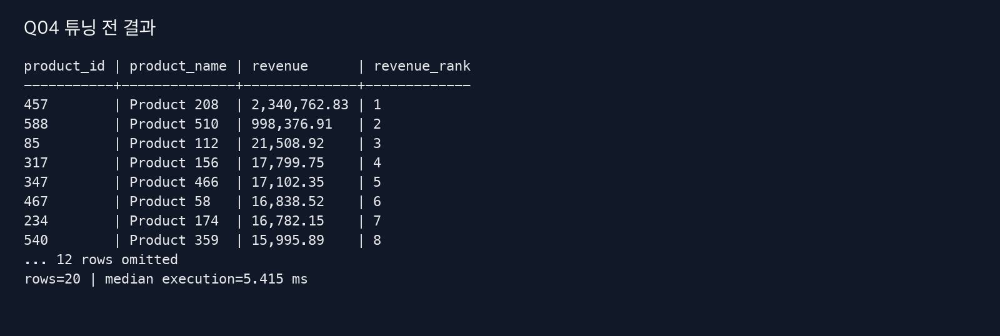
튜닝 전 성능 원문 로그 · Q04_plan_before.png (1/2)
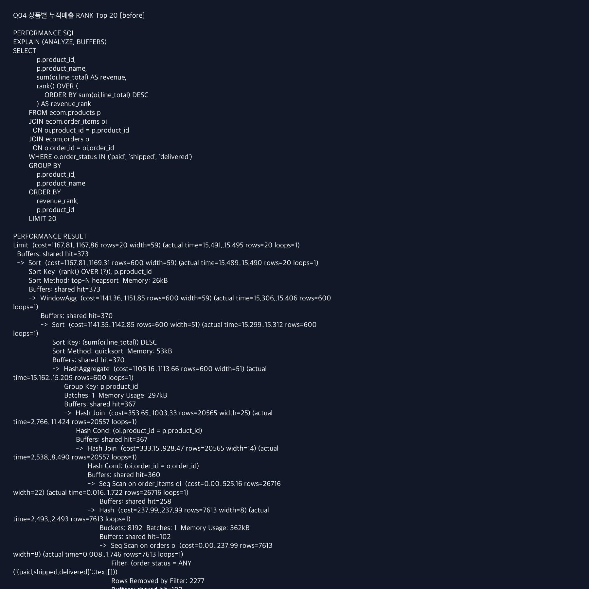
튜닝 전 성능 원문 로그 · Q04_plan_before.png (2/2)
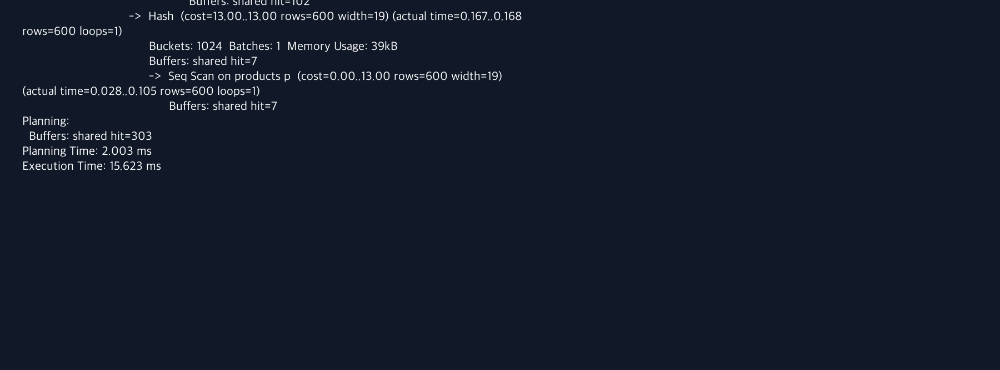
튜닝 포인트
변경 상품 매출 집계→순위→상품명 조회로 역할 분리 |
튜닝 후
WITH product_revenue AS ( |
튜닝 후 실행 결과
튜닝 후 성능 원문 로그 · Q04_plan_after.png (1/2)
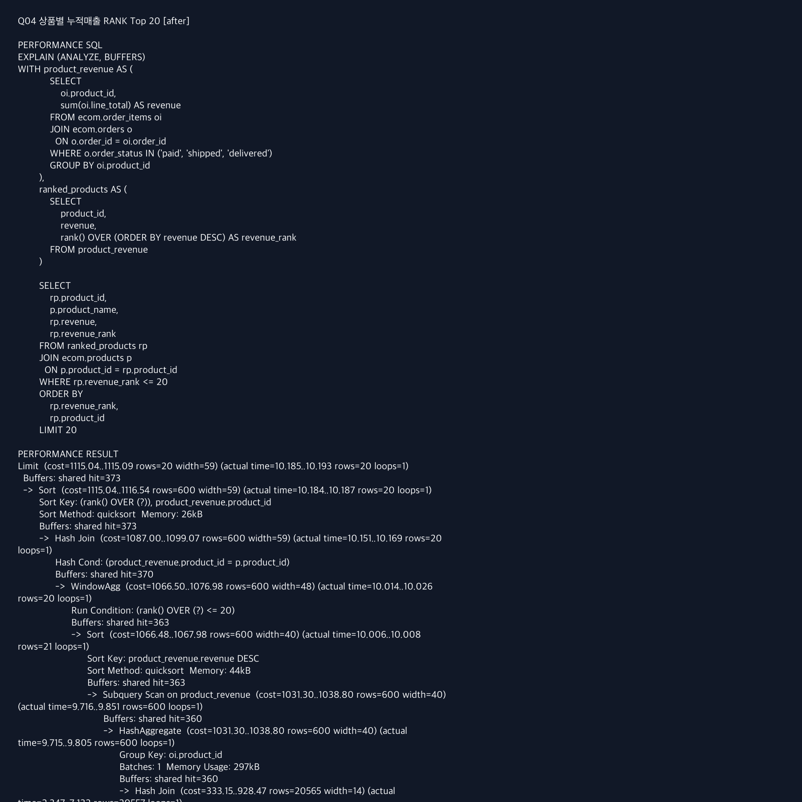
튜닝 후 성능 원문 로그 · Q04_plan_after.png (2/2)
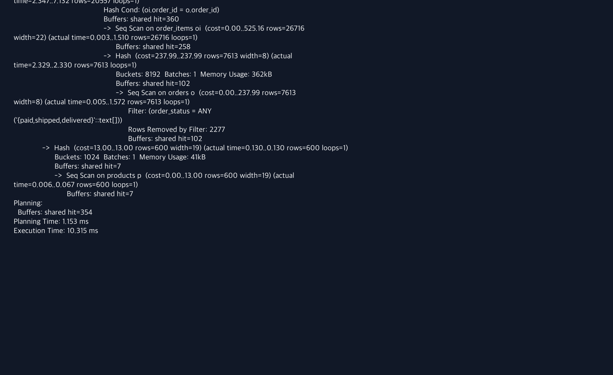
튜닝 전후 실행계획 비교
측정 항목 | 튜닝 전 | 튜닝 후 |
Execution Time | 5.415 ms | 4.014 ms |
Planning Time | 0.092 ms | 0.065 ms |
Actual Rows | 20 | 20 |
Shared Hit | 367 | 367 |
Shared Read | 0 | 0 |
Top Plan Node | Limit | Limit |
결과 동일 | - | YES |
업무 판단 및 요청 부서 전달안
튜닝 판단 MD 전달안 |
Q5. 고객 RFM
요청 부서 | CRM |
요청 목적 | 고객별 최근성·빈도·금액 파악 |
판정 기준 | 유효 주문·주문 단위 빈도 |
튜닝 전
주문상품 행에서 COUNT DISTINCT로 빈도 복원
SELECT |
튜닝 전 실행 결과
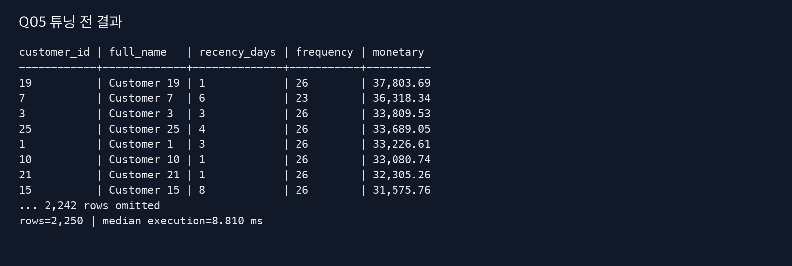
튜닝 전 성능 원문 로그 · Q05_plan_before.png (1/2)
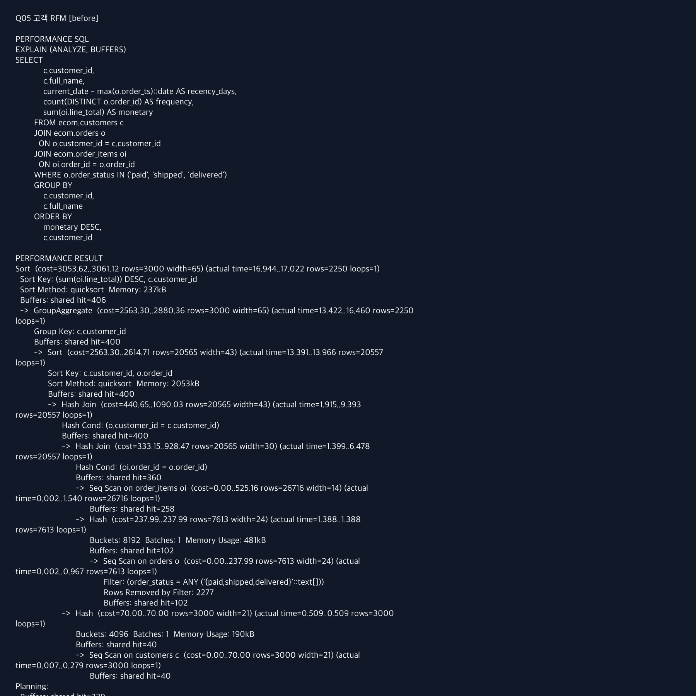
튜닝 전 성능 원문 로그 · Q05_plan_before.png (2/2)
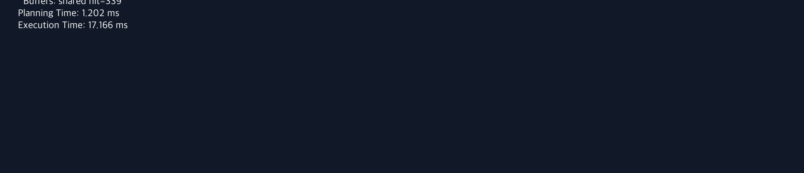
튜닝 포인트
변경 주문별 금액을 선집계한 뒤 고객 RFM 계산 |
튜닝 후
WITH order_totals AS ( |
튜닝 후 실행 결과
튜닝 후 성능 원문 로그 · Q05_plan_after.png (1/2)
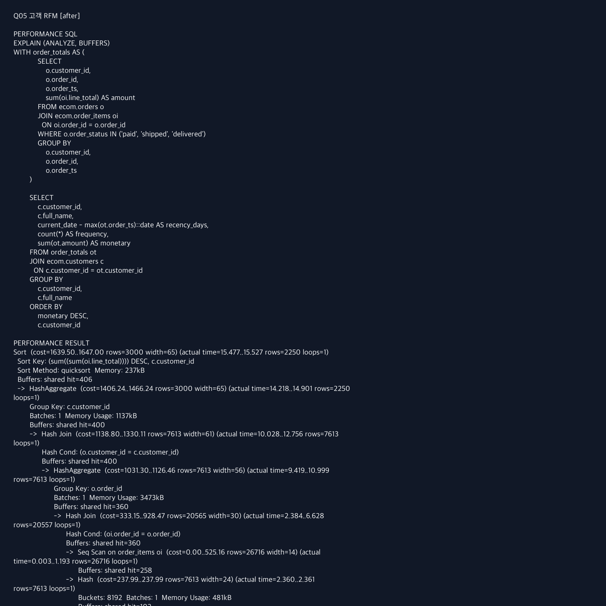
튜닝 후 성능 원문 로그 · Q05_plan_after.png (2/2)
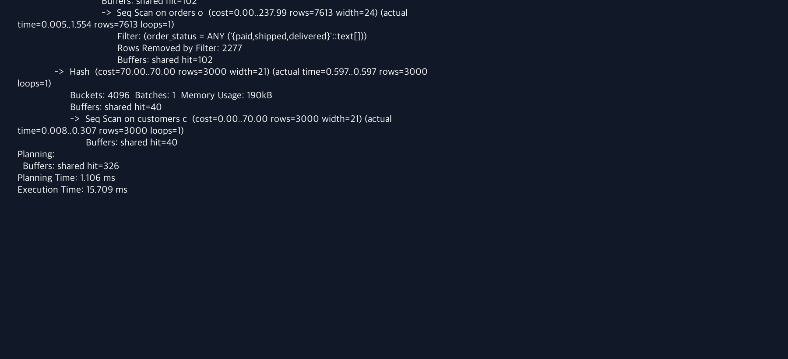
튜닝 전후 실행계획 비교
측정 항목 | 튜닝 전 | 튜닝 후 |
Execution Time | 8.810 ms | 6.844 ms |
Planning Time | 0.079 ms | 0.068 ms |
Actual Rows | 2,250 | 2,250 |
Shared Hit | 400 | 400 |
Shared Read | 0 | 0 |
Top Plan Node | Sort | Sort |
결과 동일 | - | YES |
업무 판단 및 요청 부서 전달안
튜닝 판단 CRM 전달안 |
Q6. 첫 구매 후 30일 내 재구매율
요청 부서 | CRM |
요청 목적 | 첫 구매 후 30일 내 재구매율 확인 |
판정 기준 | 첫 주문 이후 추가 주문 |
튜닝 전
고객별 EXISTS 상관 서브쿼리를 반복
WITH purchases AS ( |
튜닝 전 실행 결과
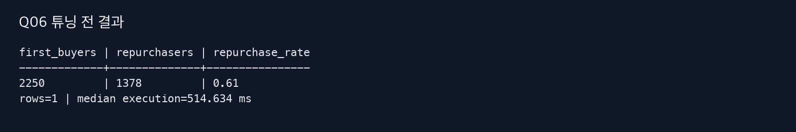
튜닝 전 성능 원문 로그 · Q06_plan_before.png (1/2)
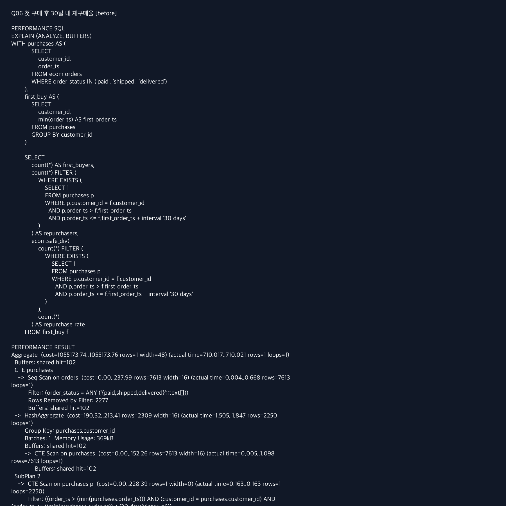
튜닝 전 성능 원문 로그 · Q06_plan_before.png (2/2)
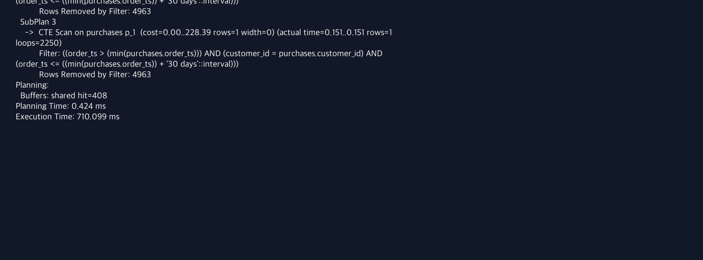
튜닝 포인트
변경 윈도 함수로 첫 구매일 계산 후 BOOL_OR로 고객당 1회 집계 |
튜닝 후
WITH purchases AS ( |
튜닝 후 실행 결과
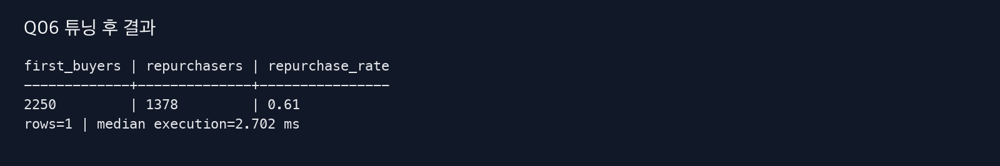
튜닝 후 성능 원문 로그 · Q06_plan_after.png (1/2)
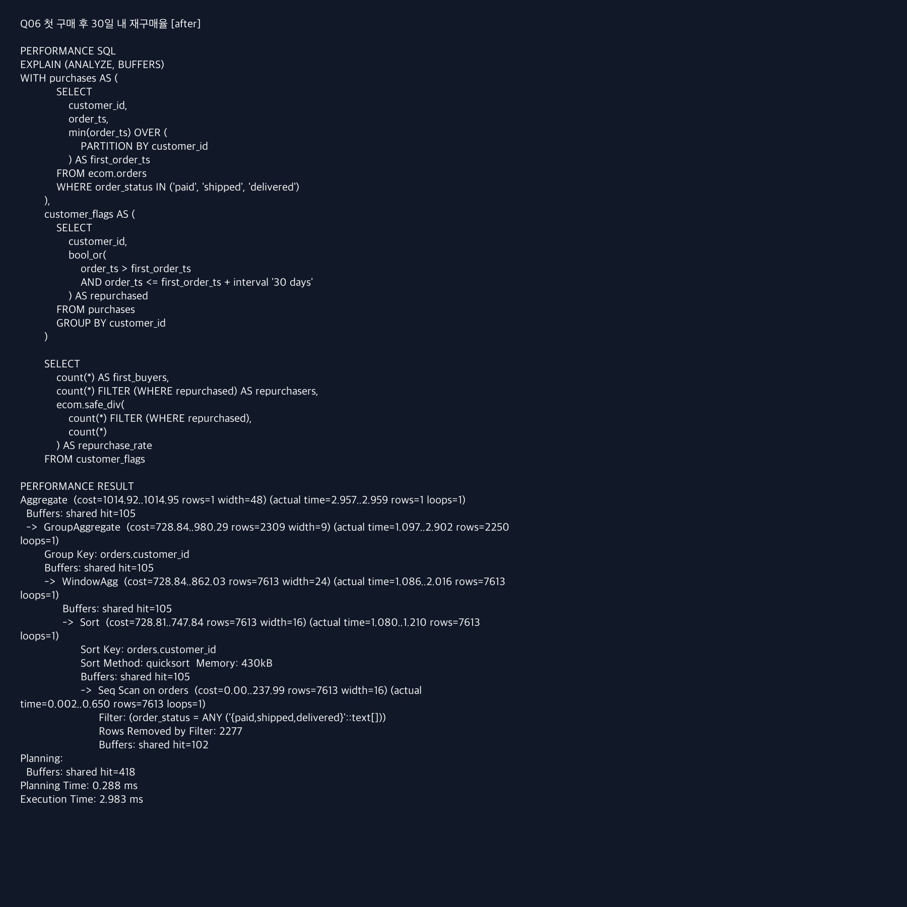
튜닝 후 성능 원문 로그 · Q06_plan_after.png (2/2)
튜닝 전후 실행계획 비교
측정 항목 | 튜닝 전 | 튜닝 후 |
Execution Time | 514.634 ms | 2.702 ms |
Planning Time | 0.085 ms | 0.034 ms |
Actual Rows | 1 | 1 |
Shared Hit | 102 | 102 |
Shared Read | 0 | 0 |
Top Plan Node | Aggregate | Aggregate |
결과 동일 | - | YES |
업무 판단 및 요청 부서 전달안
튜닝 판단 CRM 전달안 |
Q7. 재고 부족 위험 상품
요청 부서 | 구매·SCM |
요청 목적 | 재주문이 필요한 상품 탐지 |
판정 기준 | 현재고 < 재주문 임계치 |
튜닝 전
상품마다 재고 스칼라 서브쿼리를 네 번 실행
SELECT |
튜닝 전 실행 결과
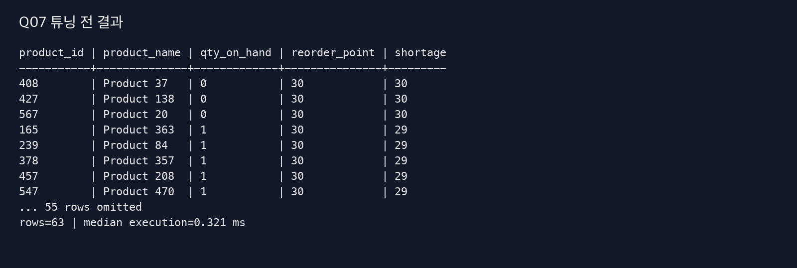
튜닝 전 성능 원문 로그 · Q07_plan_before.png (1/2)
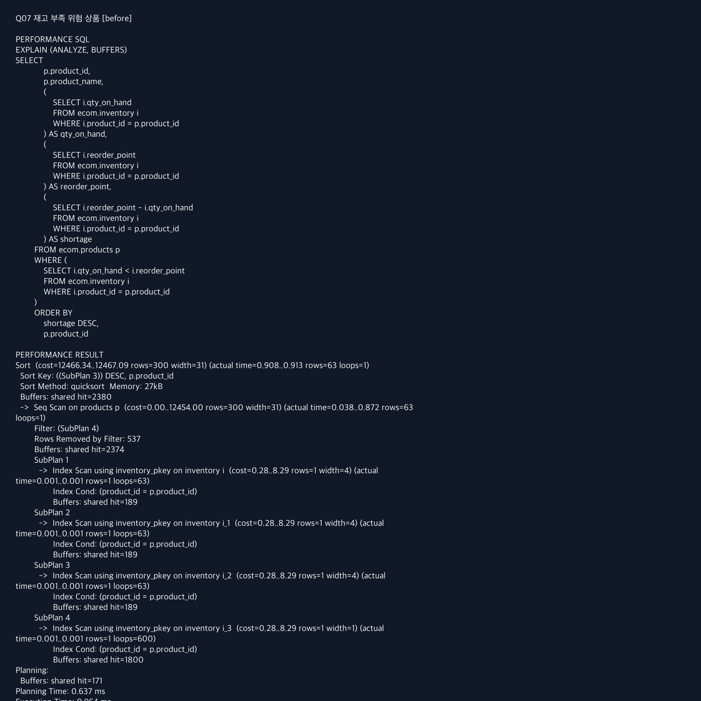
튜닝 전 성능 원문 로그 · Q07_plan_before.png (2/2)
튜닝 포인트
변경 inventory와 products를 한 번 JOIN |
튜닝 후
SELECT |
튜닝 후 실행 결과
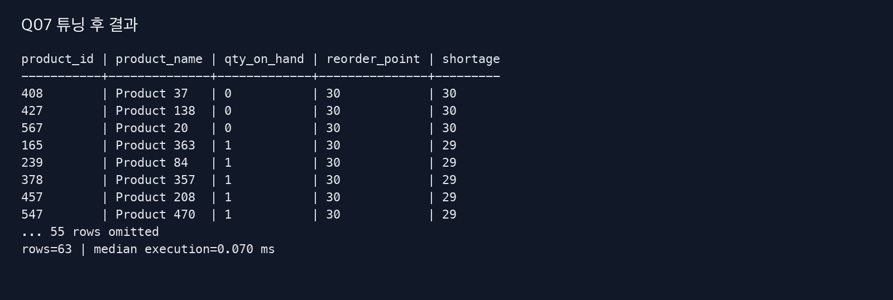
튜닝 후 성능 원문 로그 · Q07_plan_after.png
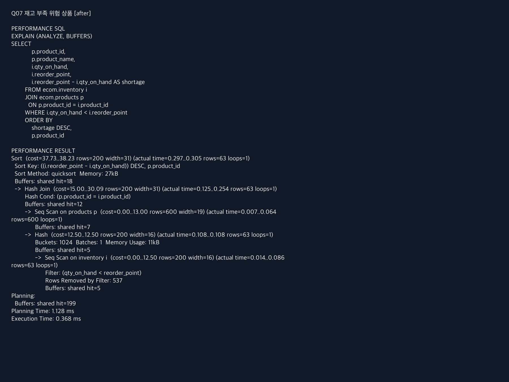
튜닝 전후 실행계획 비교
측정 항목 | 튜닝 전 | 튜닝 후 |
Execution Time | 0.321 ms | 0.070 ms |
Planning Time | 0.022 ms | 0.032 ms |
Actual Rows | 63 | 63 |
Shared Hit | 2,374 | 12 |
Shared Read | 0 | 0 |
Top Plan Node | Sort | Sort |
결과 동일 | - | YES |
업무 판단 및 요청 부서 전달안
튜닝 판단 구매·SCM 전달안 |
Q8. 리뷰 기반 효자상품
요청 부서 | MD·마케팅 |
요청 목적 | 리뷰 기반 효자상품 선별 |
판정 기준 | 평점 4.5 이상·리뷰 50개 이상 |
튜닝 전
상품명까지 조인한 뒤 모든 리뷰를 집계
SELECT |
튜닝 전 실행 결과
튜닝 전 성능 원문 로그 · Q08_plan_before.png
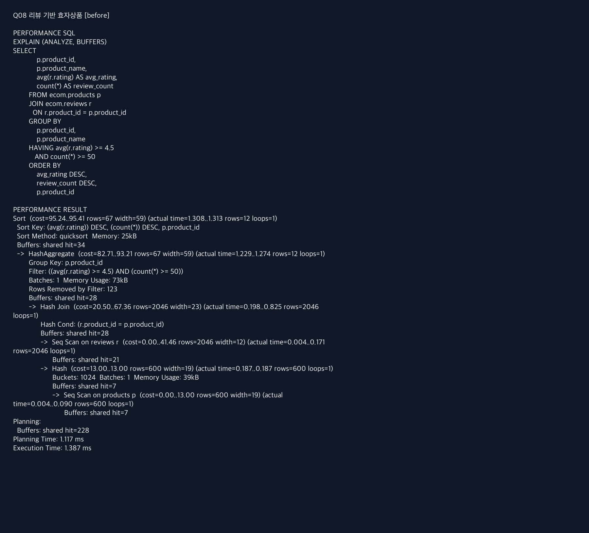
튜닝 포인트
변경 리뷰를 상품별로 먼저 집계·필터 후 상품명 조회 |
튜닝 후
WITH review_summary AS ( |
튜닝 후 실행 결과
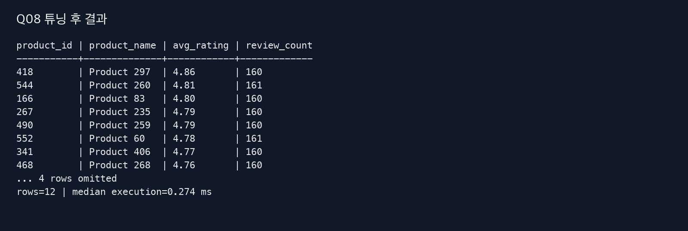
튜닝 후 성능 원문 로그 · Q08_plan_after.png (1/2)
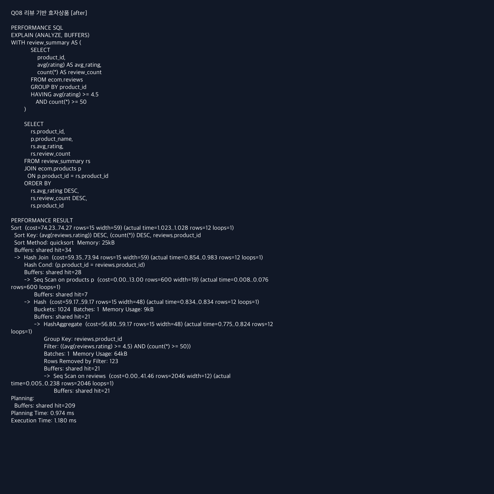
튜닝 후 성능 원문 로그 · Q08_plan_after.png (2/2)
튜닝 전후 실행계획 비교
측정 항목 | 튜닝 전 | 튜닝 후 |
Execution Time | 0.441 ms | 0.274 ms |
Planning Time | 0.061 ms | 0.029 ms |
Actual Rows | 12 | 12 |
Shared Hit | 28 | 28 |
Shared Read | 0 | 0 |
Top Plan Node | Sort | Sort |
결과 동일 | - | YES |
업무 판단 및 요청 부서 전달안
튜닝 판단 MD·마케팅 전달안 |
Q9. 쿠폰 사용 여부별 평균 주문 금액
요청 부서 | 마케팅·재무 |
요청 목적 | 쿠폰 사용 여부별 AOV 비교 |
판정 기준 | 주문별 금액을 먼저 집계 |
튜닝 전
주문상품 행 합계÷COUNT DISTINCT로 AOV 계산
SELECT |
튜닝 전 실행 결과
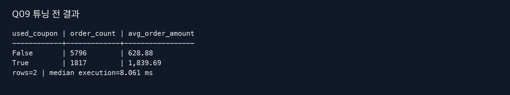
튜닝 전 성능 원문 로그 · Q09_plan_before.png
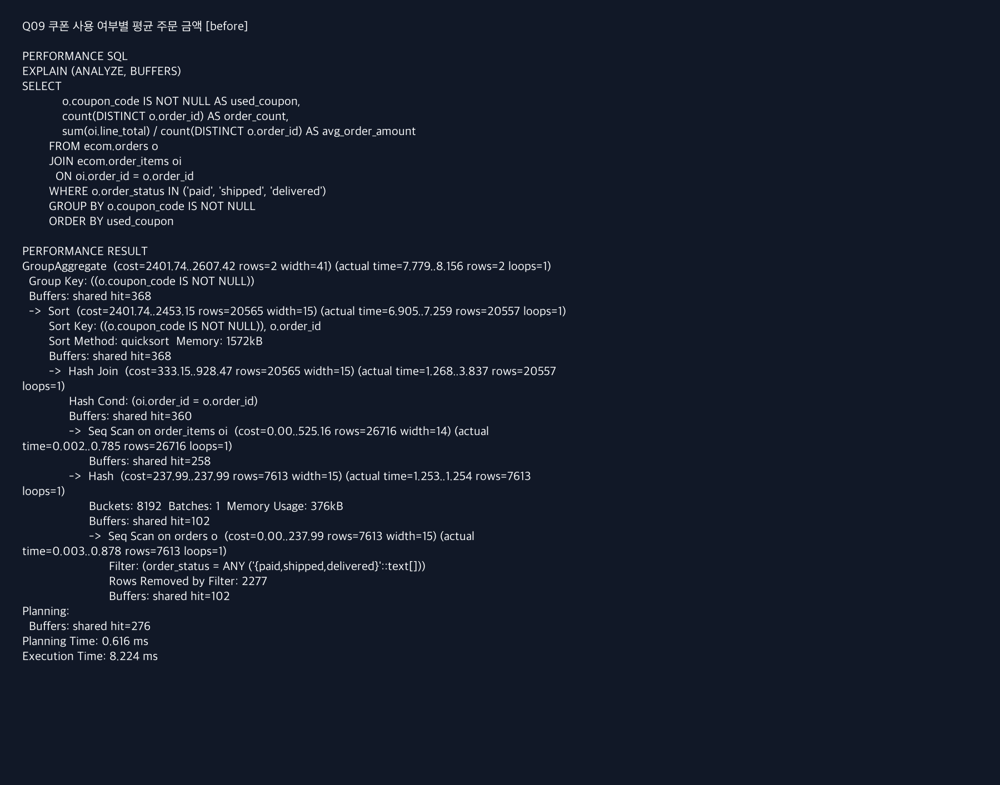
튜닝 포인트
변경 주문별 금액 선집계 후 쿠폰 그룹 AVG |
튜닝 후
WITH order_totals AS ( |
튜닝 후 실행 결과
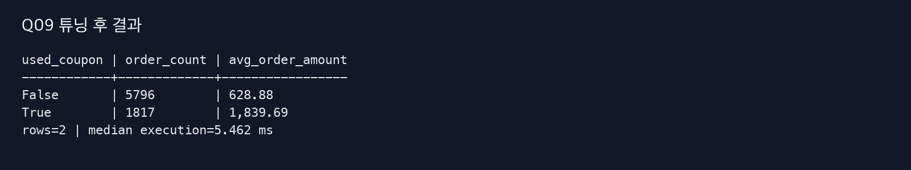
튜닝 후 성능 원문 로그 · Q09_plan_after.png (1/2)
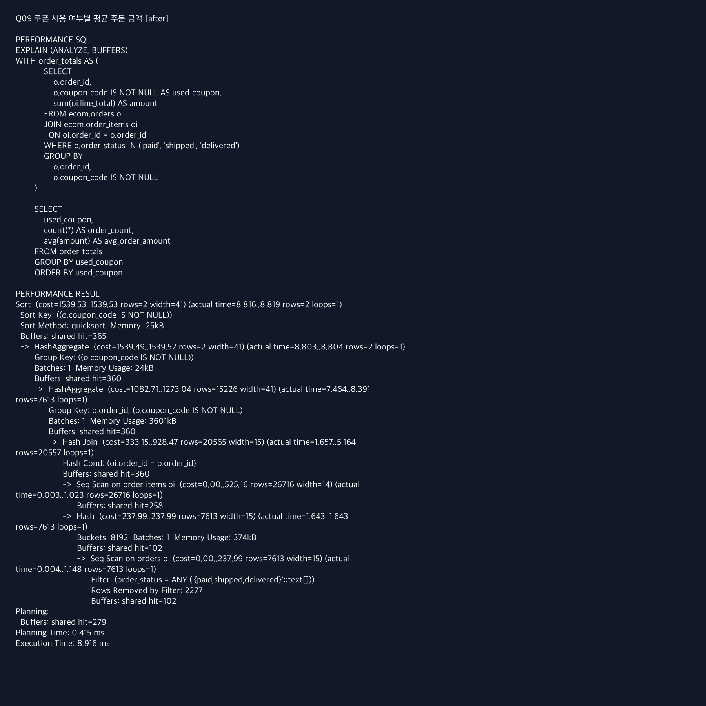
튜닝 후 성능 원문 로그 · Q09_plan_after.png (2/2)
튜닝 전후 실행계획 비교
측정 항목 | 튜닝 전 | 튜닝 후 |
Execution Time | 8.061 ms | 5.462 ms |
Planning Time | 0.053 ms | 0.047 ms |
Actual Rows | 2 | 2 |
Shared Hit | 360 | 360 |
Shared Read | 0 | 0 |
Top Plan Node | Aggregate | Sort |
결과 동일 | - | YES |
업무 판단 및 요청 부서 전달안
튜닝 판단 마케팅·재무 전달안 |
Q10. 상위 1% 고객의 최근 60일 매출
요청 부서 | CRM·VIP |
요청 목적 | 상위 1% 고객의 최근 60일 매출 |
판정 기준 | 누적매출 Top 30 후 60일 집계 |
튜닝 전
Top 30 고객마다 최근 60일 매출 상관 조회
WITH lifetime AS ( |
튜닝 전 실행 결과
튜닝 전 성능 원문 로그 · Q10_plan_before.png (1/2)
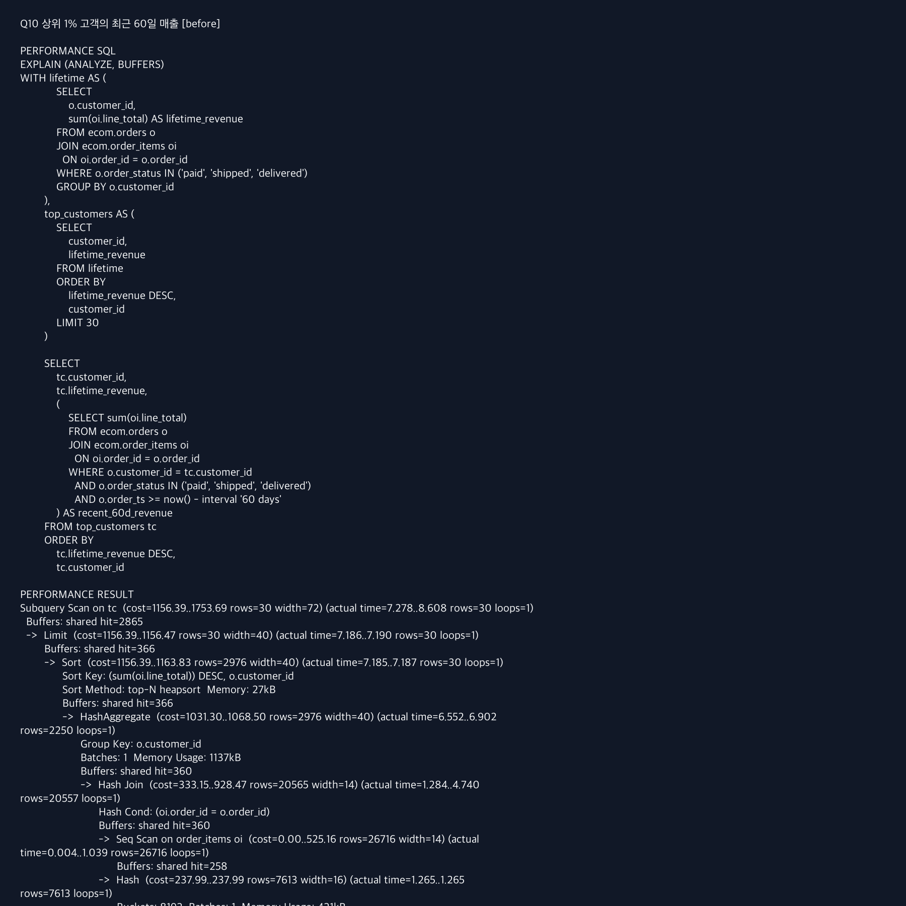
튜닝 전 성능 원문 로그 · Q10_plan_before.png (2/2)
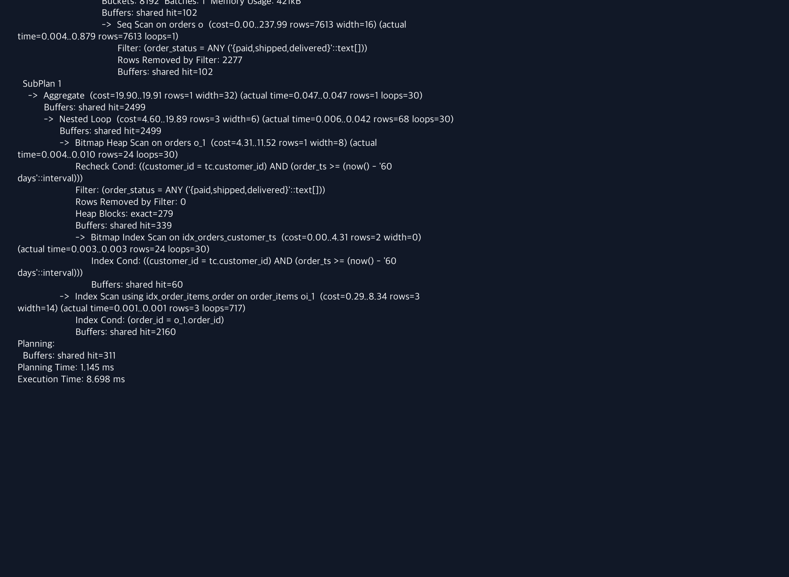
튜닝 포인트
변경 한 번의 고객 집계에서 누적·60일 매출을 조건부 합산 |
튜닝 후
WITH customer_sales AS ( |
튜닝 후 실행 결과
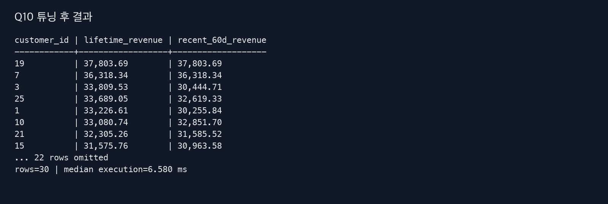
튜닝 후 성능 원문 로그 · Q10_plan_after.png (1/2)
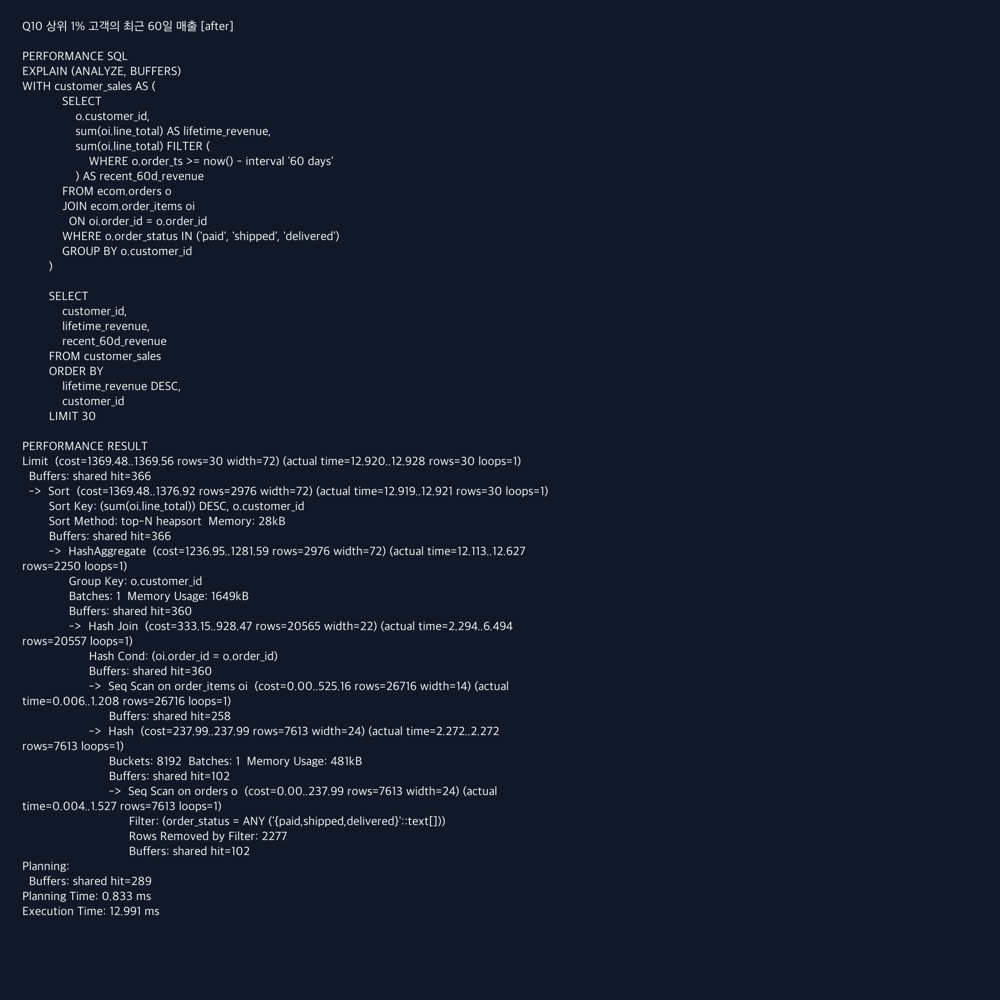
튜닝 후 성능 원문 로그 · Q10_plan_after.png (2/2)

튜닝 전후 실행계획 비교
측정 항목 | 튜닝 전 | 튜닝 후 |
Execution Time | 5.036 ms | 6.580 ms |
Planning Time | 0.088 ms | 0.043 ms |
Actual Rows | 30 | 30 |
Shared Hit | 2,856 | 360 |
Shared Read | 0 | 0 |
Top Plan Node | Subquery Scan | Limit |
결과 동일 | - | YES |
업무 판단 및 요청 부서 전달안
튜닝 판단 CRM·VIP 전달안 |
Q11. 안전한 나눗셈 함수 비교
검증 목적 | 분모 0·NULL 처리 차이 확인 |
비교 함수 | ecom.f_safe_div · ecom.safe_div |
적용 판단 | 평균 계산은 관측 없음과 실제 0을 구분 |
검증 SQL 및 결과
SELECT |
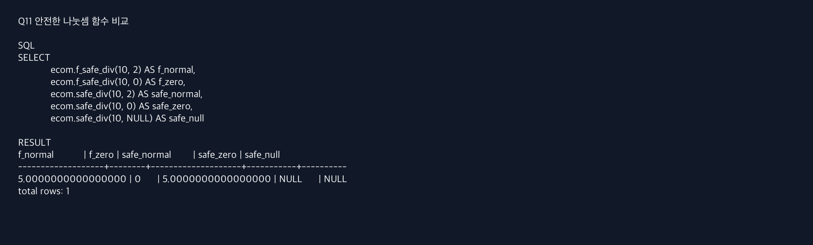
결과 정상 분모에서는 두 함수 모두 5를 반환했다. 분모가 0이면 f_safe_div는 0, safe_div는 NULL을 반환하며 safe_div는 NULL 분모도 NULL로 유지한다. |
선택 평균값에서 ‘관측 없음’과 실제 0을 구분하기 위해 Q2·Q6에는 ecom.safe_div를 사용했다. |
부록 A. 조인 방식 비교
같은 고객별 매출 집계 쿼리에서 PostgreSQL의 조인 옵션을 각각 강제해 실제 실행계획을 비교했다. 목적은 특정 조인을 암기하는 것이 아니라, 입력 행 수·선택도·인덱스·반복 탐색 비용을 보고 옵티마이저의 선택을 검증하는 것이다. 수치는 현재 시드 데이터와 캐시 상태에서의 1회 관측값이다.
이 쿼리에서 조인 전략을 고민한 이유
확인 절차와 판독 포인트
1. 비교 통제 | 동일 SQL·동일 데이터에서 SET LOCAL로 하나의 조인 방식만 활성화 |
2. 결과 동일성 | 세 계획 모두 조인 20,557행, 최종 2,250행인지 확인 |
3. 추정 품질 | 예상 20,565행 대비 실제 20,557행으로 행 수 오차가 매우 작음 |
4. 실제 비용 | Execution Time·Buffers hit·loops·스캔 방식·Hash Batch/메모리를 함께 비교 |
5. 해석 제한 | 조인 강제는 원인 확인용이며, 운영 SQL에서는 통계정보와 옵티마이저 선택을 우선 |
방식 | 실행시간 | Buffers hit | 적합한 상황 | 이번 결과 |
Nested Loop | 19.833 ms | 23,069 | 외부 결과가 작고 내부 인덱스가 유효 | orders 7,613행마다 order_items 인덱스 탐색 |
Hash Join | 12.881 ms | 360 | 큰 동등 조인·정렬 불필요 | 현재 데이터에서 가장 빠르고 버퍼 접근 최소 |
Merge Join | 13.837 ms | 442 | 양쪽 입력이 조인 키로 정렬 | PK와 order_id 인덱스 순서를 활용 |
실측 결과 해석
Nested Loop orders 7,613행마다 idx_order_items_order를 탐색해 내부 Index Scan loops=7,613이 발생했다. 건당 탐색은 빨랐지만 누적 Buffers hit=23,069, 19.833ms로 가장 비싼 계획이었다. |
Hash Join 필터를 통과한 orders 7,613행으로 421kB 해시를 만들고 order_items를 1회 순차 스캔했다. Batches=1이라 디스크 spill이 없었고, Buffers hit=360, 12.881ms로 가장 효율적이었다. |
Merge Join orders_pkey와 idx_order_items_order의 정렬 순서를 활용해 별도 Sort는 없었다. Buffers hit=442, 13.837ms로 Hash Join에 근접했지만 양쪽 Index Scan 비용 때문에 약간 느렸다. |
결론 현 분포에서는 Hash Join이 Nested Loop보다 6.952ms(35.1%) 빨랐고 버퍼 hit를 98.4% 줄였다. 다만 기간 필터 등으로 외부 행이 소수로 줄면 Nested Loop를, 양쪽이 이미 조인 키 순으로 정렬된 대량 입력이면 Merge Join을 다시 검토한다. |
Bitmap Heap Scan은 어떻게 볼 것인가
Bitmap Heap Scan은 Hash/Nested Loop/Merge와 같은 조인 알고리즘이 아니라 테이블 접근 방식이다. 인덱스 조건에 맞는 행이 여러 페이지에 퍼져 있을 때 위치를 비트맵으로 모아 heap 페이지를 묶어 읽는다. 이번 비교에서는 orders 상태 필터가 많은 행을 남겨 Seq Scan이 선택됐고 Bitmap Heap Scan은 나타나지 않았다. 기간·상태 조건의 선택도가 중간 수준으로 낮아지면 Bitmap Index Scan과 함께 선택되는지 확인할 가치가 있다.
실행계획 증적
Nested Loop: 내부 Index Scan loops=7,613과 Buffers hit=23,069 확인
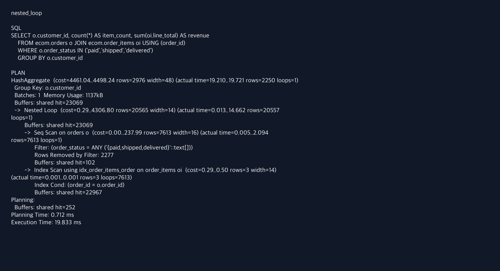
Hash Join: Hash Batches=1, Memory Usage=421kB, Buffers hit=360 확인
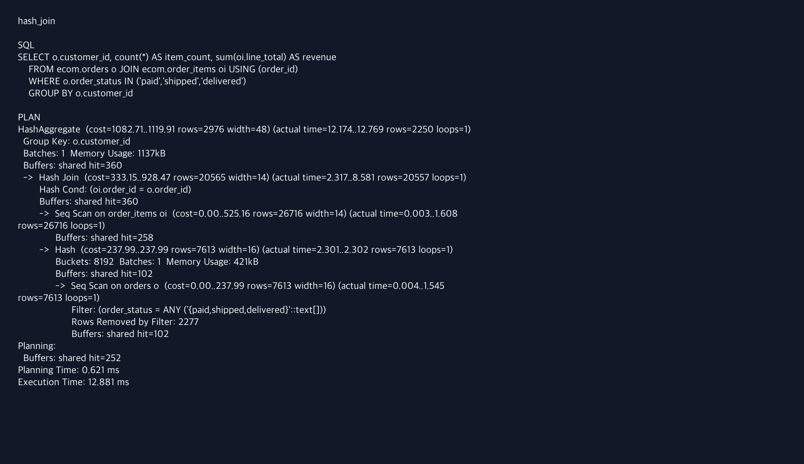
Merge Join: 양쪽 Index Scan과 별도 Sort 없음 확인
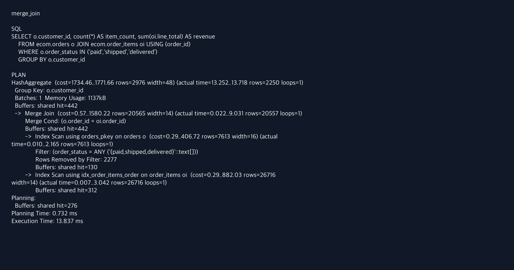
비교 SQL
SELECT |
부록 B. Materialized View
반복 요청이 많은 일별 GMV 집계를 미리 저장해 조회 비용을 줄이는 구조다. 일반 View와 달리 결과를 물리적으로 보관하므로 원본 변경 후 명시적으로 갱신해야 한다.
생성 및 갱신 스크립트
CREATE MATERIALIZED VIEW IF NOT EXISTS ecom.mv_daily_gmv AS |
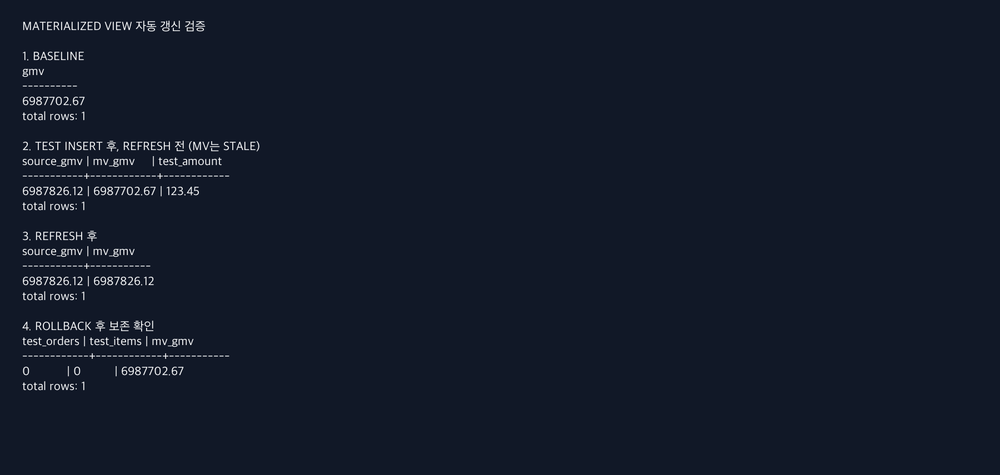
검증 결과 트랜잭션 안에서 테스트 매출 123.45를 추가하자 원본 GMV만 증가하고 MV는 이전 값을 유지했다. REFRESH 후 두 합계가 같아졌으며, 마지막 ROLLBACK으로 테스트 행이 남지 않았음을 확인했다. |
운영 판단 Materialized View는 자동 갱신되지 않는다. 일 배치나 적재 완료 이벤트 뒤에 REFRESH를 실행하고, 조회 중단을 줄이려면 day UNIQUE 인덱스와 CONCURRENTLY를 검토한다. |
부록 C. 최종 인사이트
랜덤 데이터에서 배운 점
DBMS별 실행계획 확인 도구(선택)
DBMS | 대표 도구 | 확인 포인트 |
PostgreSQL | EXPLAIN (ANALYZE, BUFFERS) | 실제 행·시간·버퍼와 예상치 비교 |
MySQL | EXPLAIN ANALYZE | 실제 반복·행 수와 비용 확인 |
Oracle | DBMS_XPLAN | 실행 통계와 접근 경로 확인 |
SQL Server | Actual Execution Plan | 연산자 비용·실제/예상 행 차이 확인 |